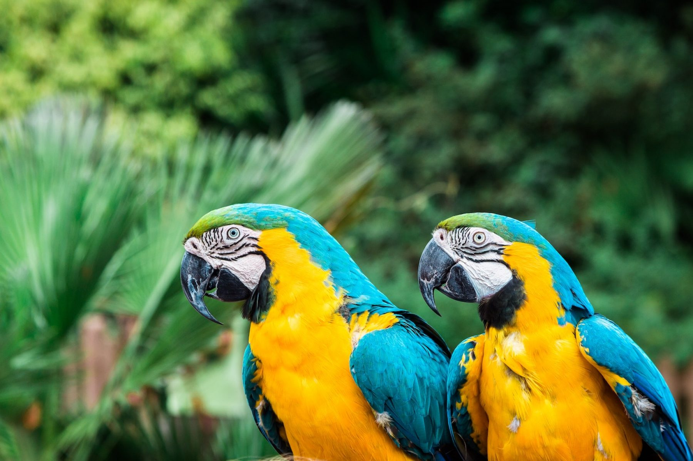

Deforestation is the second major cause of global warming and climate change. Last year, the planet saw its fourth highest level of tropical tree loss, calculating to 30 million acres. If the current rate of deforestation continues, it will take less than 100 years to destroy all of our rainforests. In addition to that, around 28,000 species are bound to go extinct in the upcoming years. We are currently losing 18.7 million acres of forests anually, which is equivalent to 27 soccer fields every minute. More than 1.6 billion people rely on forests for all or part of their livelihoods. Around 33 million acres of forestland that are lost annually around the population are responsible for 20% of human-caused greenhouse gas emissions.
Make sure that the products you buy are made from 100% post-consumer content materials. Eat a plant-based diet or limit your meat consumption. Buy recycled products and recycle them after use. Buy certified wood products. Don't use palm oil or products with palm oil. Raise awareness in your community! You should also limit the use of paper. Millions of trees are cut down each day in order to develop paper. Tropical rainforests have more than 210 gigatons of carbon stored within its trees. When we cut them down, not only are we reducing our supply of oxygen, we are also releasing all that carbon into our atmosphere. About more than 4.6 million hectares of forests have been cut down or burned to supply our increasing demand for wood and land.
